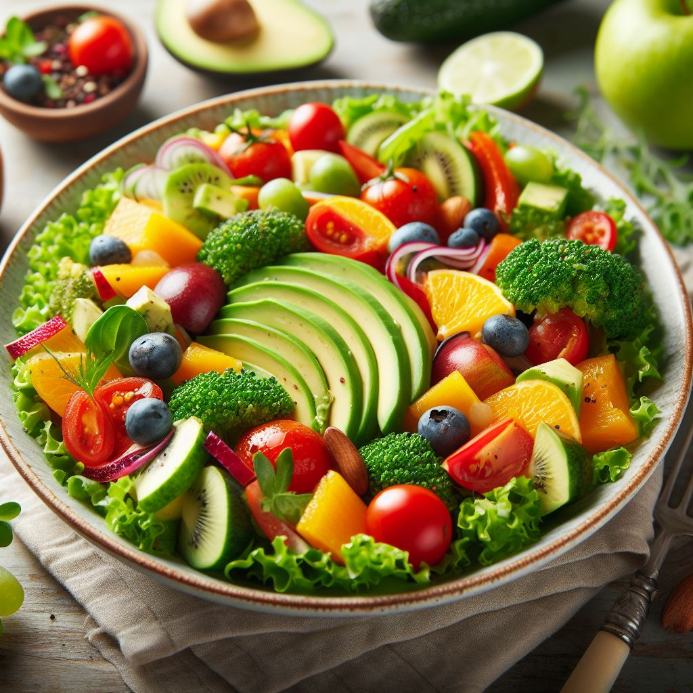
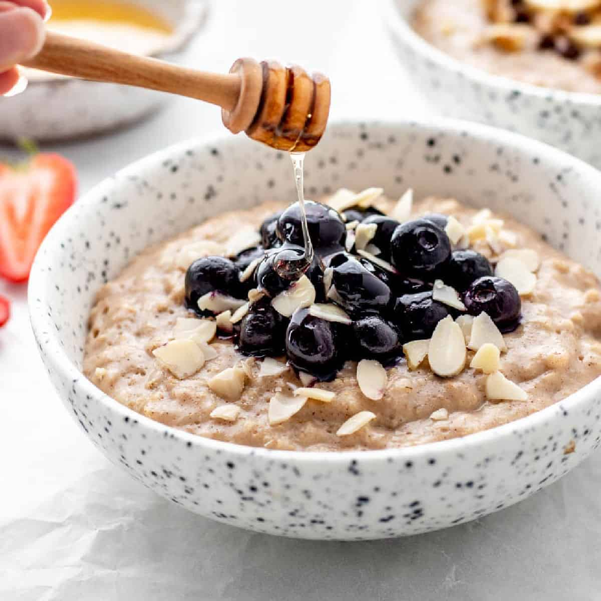

Fish Tacos
A cool sauce with just a bit of zing tops these breaded fish tacos, This recipe is a delicious guilt-free dish that doesn't break the bank.
 Non-Vegetarian
Non-Vegetarian
Fruits and Vegetables Salad
A salad starts with raw greens, spinach, kale, mixed greens or arugula, Cucumber, tomato, radish, carrot, beetroot, peppers, cabbage, sweetcorn, onion, olives, celery and avocado.
 VegetarianCreamy Oatmeal with Almond Milk
Oatmeal is a preparation of oats that have been de-husked, steamed, and flattened, or a coarse flour of hulled oat grains that have either been milled, rolled. Steel-cut oats are known as coarse oatmeal, Irish oatmeal, or pinhead oats.
 Vegetarian